Transformar sinais físicos e dados em decisões de manutenção
A manutenção preditiva acompanha parâmetros reais do equipamento para antecipar falhas. A análise de falhas organiza causas, efeitos e relações lógicas para decidir onde agir primeiro.
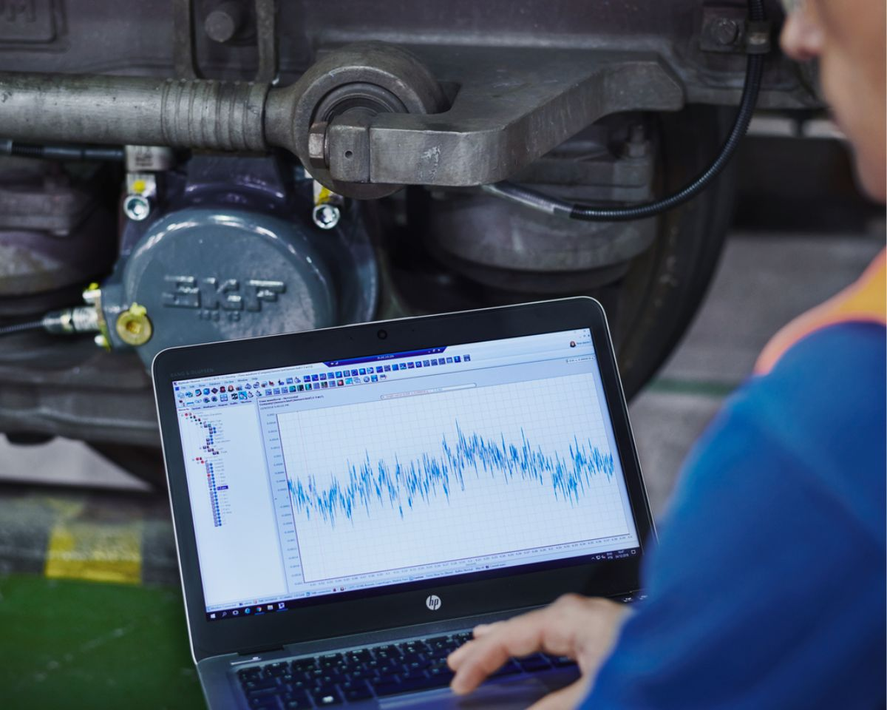
Manutenção preditiva: intervir o mínimo necessário
É realizada a partir do monitoramento das condições de funcionamento. Seu objetivo é prevenir falhas acompanhando parâmetros que representam o estado do sistema.
- reduz intervenções desnecessárias e tende a diminuir custos;
- pode aumentar disponibilidade, durabilidade e segurança;
- é especialmente relevante em equipamentos críticos ou de alto custo;
- quando a intervenção é decidida, a ação física costuma ser uma corretiva planejada.
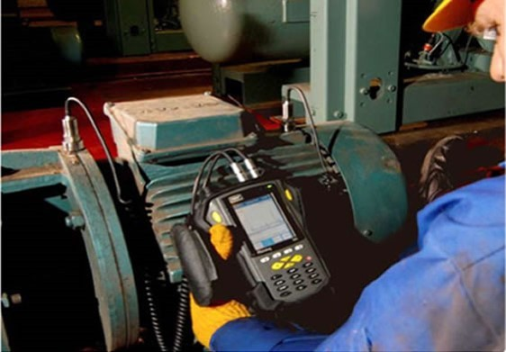
Plano de manutenção preditiva: uma sequência, não um aparelho
- Ativos: priorizar equipamentos vitais ao processo ou de alto custo.
- Técnicas: escolher em função do tipo de equipamento e do modo de falha.
- Programa: definir pontos de medição e periodicidade.
- Padrões: estabelecer linha de base e limites de alerta.
- Dados: registrar histórico e tendências, emitindo alerta quando limites forem excedidos.
- Ação: confirmar a falha e programar a parada no momento mais conveniente, sem ultrapassar limites de segurança.
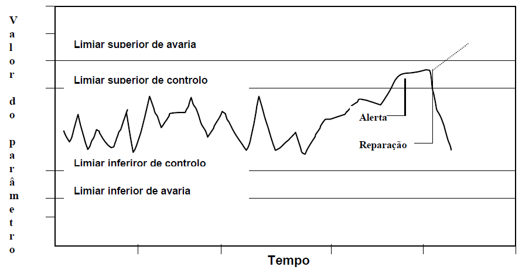
Vibração e ruído: escutar o comportamento mecânico
A análise de vibração e ruídos é amplamente usada em motores, geradores, turbinas, compressores e bombas.
- analisa intensidade das forças de excitação;
- considera a frequência de oscilação;
- depende da mobilidade da estrutura e da fundação;
- pode usar sensores portáteis ou permanentes.
Cavitação e aeração
Ruído elevado em sistemas hidráulicos pode indicar fenômenos que danificam bombas e comprometem atuadores. A cavitação está associada à formação e colapso de bolhas de vapor; a aeração envolve entrada de ar no fluido.
Termografia: enxergar temperatura antes de enxergar a falha
A termografia detecta falhas precedidas por aumento ou diminuição anormal de temperatura. Pode ser aplicada em componentes em atrito, sistemas elétricos, refrigeração e aquecimento.
- termômetros fazem medição de contato;
- radiômetros e termovisores trabalham com radiação infravermelha;
- a imagem térmica permite avaliar distribuição superficial da temperatura em operação.
Nos exemplos do material, a técnica é utilizada também para identificar hotspots em painéis elétricos e apoiar a prevenção de falhas e incêndios.
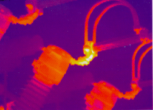
Tribologia e contaminação: o óleo como fonte de informação
A tribologia estuda atrito, desgaste e formas de evitá-los. A análise de óleo mede propriedades físico-químicas e identifica contaminantes líquidos ou sólidos.
- viscosidade e acidez;
- concentração de água;
- nível de partículas sólidas;
- forma, tamanho, quantidade e composição das partículas;
- ferrografia: separação de partículas por campos magnéticos.
O material destaca que partículas pequenas podem ser críticas porque as folgas internas de muitos componentes hidráulicos estão na ordem de poucos micrômetros.
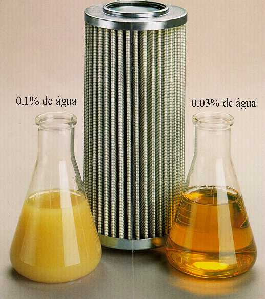
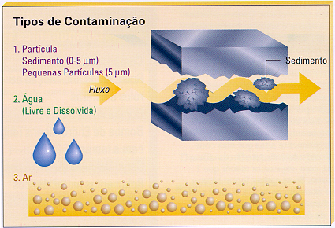
Sensores, conectividade e IA: ampliar a capacidade de diagnóstico
- Sensores portáteis: coleta periódica em rota.
- Sensores integrados: transmissão automática e monitoramento contínuo.
- Strain gauge: transforma deformação mecânica em variação elétrica, útil em testes estruturais e de durabilidade.
- IoT + cloud: permitem centralizar dados e acompanhar condição real.
- Machine Learning: o exemplo da aula combina Random Forest, tratamento de classes raras e SHAP para apoiar previsão e interpretação.
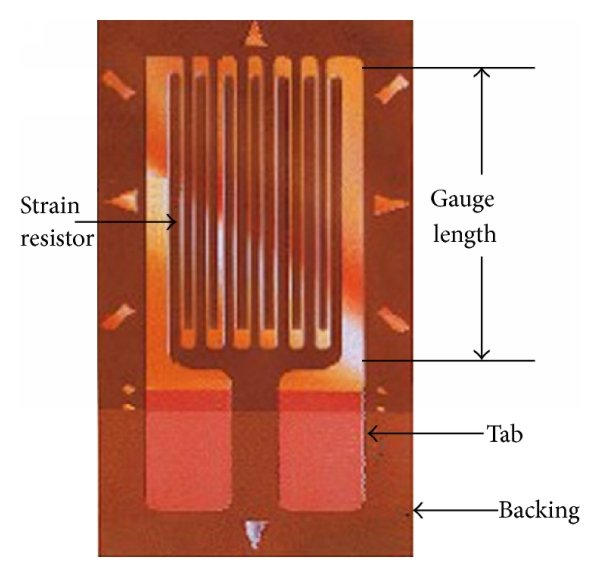
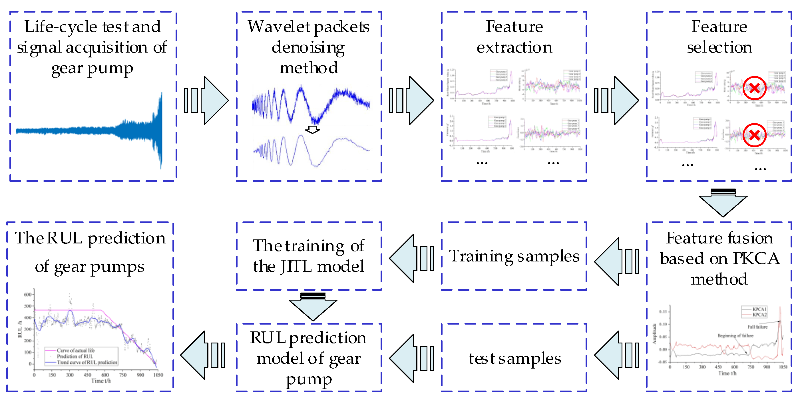
Análise de falhas: da função ao encadeamento de causas
A análise começa pela compreensão do sistema e de suas funções. O material propõe desdobrar o sistema em subsistemas e componentes, identificando fluxos de energia, material e sinal.
Dois tipos de raciocínio
- Indutivo (bottom-up): parte da causa para o efeito.
- Dedutivo (top-down): parte do efeito indesejado para buscar causas.
Ferramentas
- Ishikawa: organiza causas potenciais.
- FTA: representa relações lógicas entre evento de topo, eventos intermediários e eventos básicos.
- Portas E e OU formalizam como os eventos se combinam.
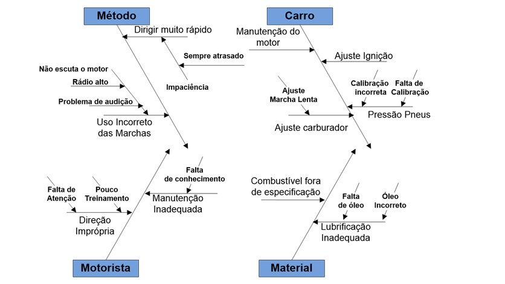
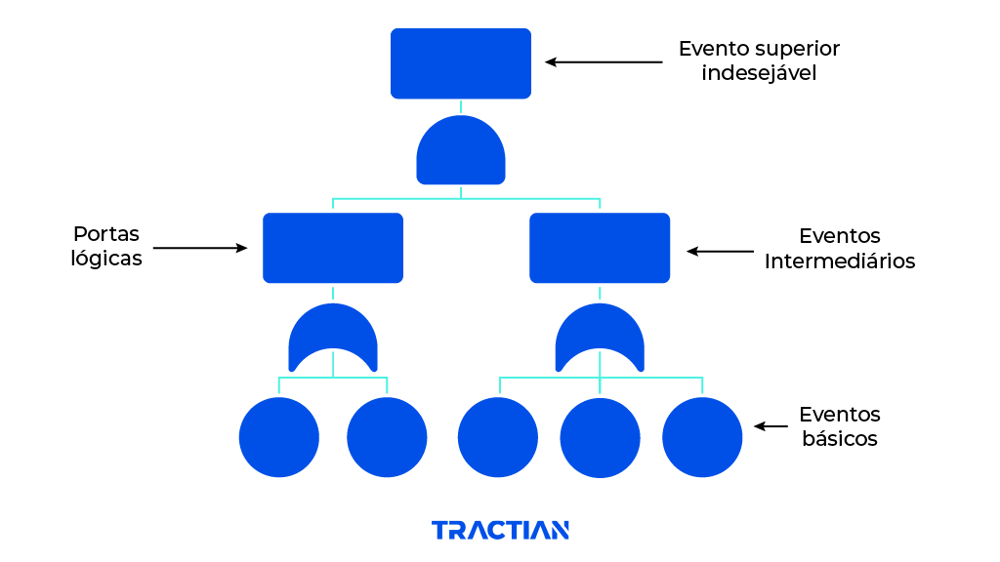
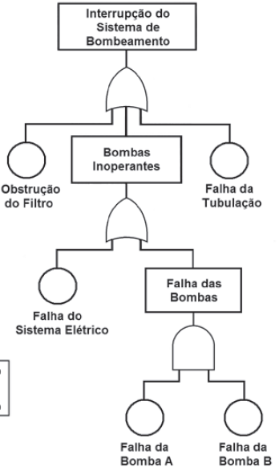
FMEA e FMECA: priorizar riscos antes que virem perdas
O FMEA identifica modos de falha conhecidos ou potenciais, suas causas, seus efeitos e ações recomendadas. O FMECA amplia a análise incorporando criticidade.
- S = severidade do efeito;
- O = ocorrência do modo de falha;
- D = dificuldade/probabilidade de detecção;
- RPN = S × O × D; no material, quanto menor, melhor.
O processo é explicitamente apresentado como trabalho de equipe multifuncional, não como preenchimento individual de planilha.
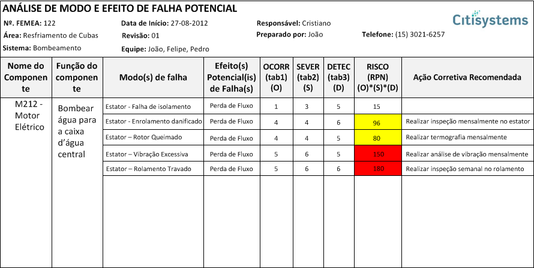
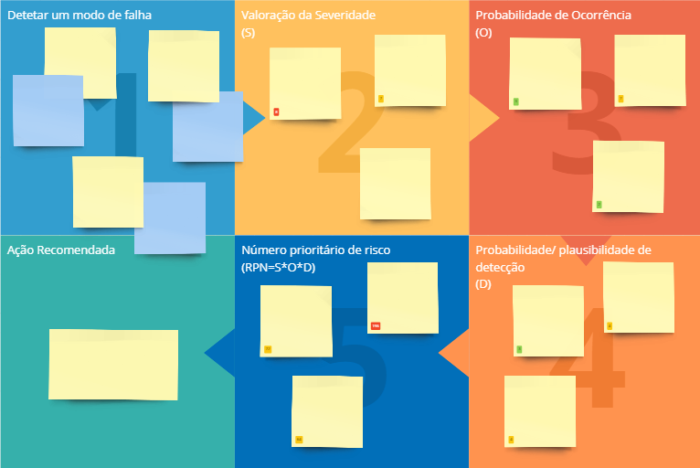
O que precisa ficar da aula
O desafio é medir a variável adequada.
Sem linha de base e limite, existe número, não diagnóstico.
Ishikawa, FTA e FMEA organizam o raciocínio.
Criticidade, segurança e produção orientam o momento de intervir.
Questões
Material reorganizado exclusivamente a partir dos três PowerPoints fornecidos. As imagens utilizadas foram extraídas dos próprios arquivos de aula.